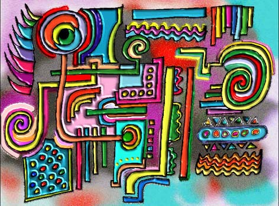
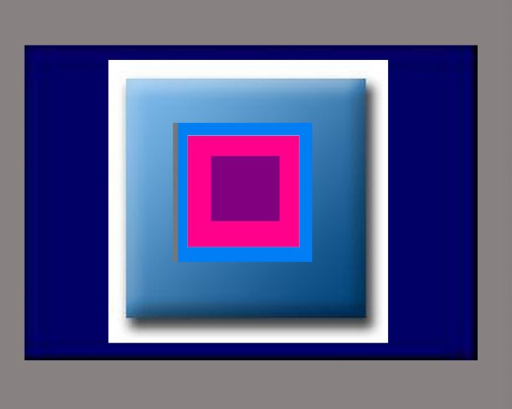
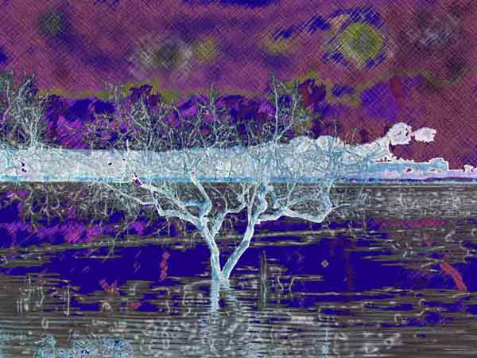
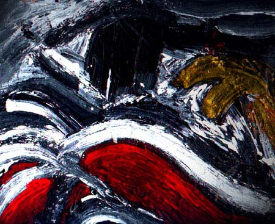

IMAGES OF THE DAY 100
03/21/2024 - 03/31/2024
03/21/2024
Mixed Technique
Vector Art
Mean Reds
by Will Dawson
Click image to access artist's full exhibit

03/22/2024
Mixed Technique
Shadows of the World
Imaginary Gardens
Portolano
by Carmen Dell'Aversano
Click image to access artist's full exhibit

03/23/2024
Mixed Technique
CyberAlchemy
Birth of Spring
by Sara Deutsch
Click image to access artist's full exhibit


03/24/2024
Mixed Technique
Nine Works
#49C
by Angelo Di Cicco
Click image to access artist's full exhibit
03/25/2024
Mixed Technique
Alchemy
In My Moonlit Garden
by Lisle Drake
Click image to access artist's full exhibit

03/26/2024
Mixed Technique
Mental Landscape
Venus Comb
by Michael Frank
Click image to access artist's full exhibit


03/27/2024
Mixed Technique
Geometric Abstraction and Color Contrast
Pictures65-001
by Jack Galmitz
Click image to access artist's full exhibit

03/28/2024
Mixed Technique
States of Mind
Pantano
by Giuseppi Genna
Click image to access artist's full exhibit

03/29/2024
Mixed Technique
Scanned Acrylics
Ambiguity of Intent
by Oliver Gili
Click image to access artist's full exhibit
03/30/2024
Mixed Technique
Digital Collage
Hope Returns
by Ileana Frometa Grillo
Click image to access artist's full exhibit

03/31/2024
Mixed Technique
Fantasy and Imagination
MOCA 8
by Raya Grinberg
Click image to access artist's full exhibit